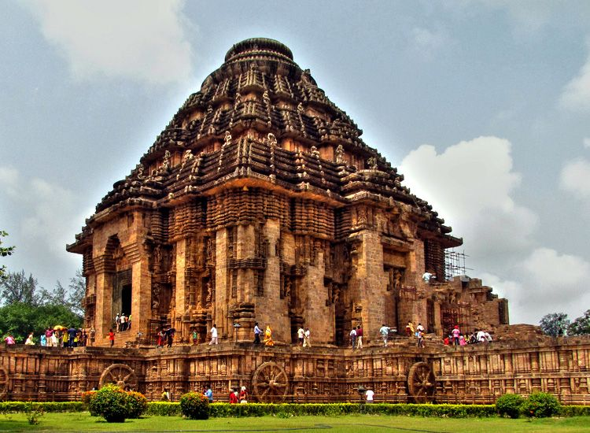

Red Fort, Delhi

Red Fort, a UNESCO World Heritage Site, is an outstanding combination of size and aesthetics. Construction took over a period of ten years, from 1638 to 1648. When the Mughal emperor, Shah Jahan, came to Delhi shifting his capital from Agra to Delhi, the fort was his idea of residence. It was then famous as the Qila-e-Mubarak. The octagonal fort, built in red sandstone, stands proudly amid the din and commotion of Old Delhi. It draws visitors in great numbers every day.
Khajuraho Temples, Madhya Pradesh

Khajuraho Temples, located in the town of Khajuraho in Madhya Pradesh, is a UNESCO World Heritage Site. and one of the unique structures you will come across. The temples display a very powerful emotion residing within human beings, that of eroticism and sensuality. Built by the Chandel rulers, this group of Hindu and Jain temples consist of exquisitely carved statues and sculptures that reflect the traditional Hindu values of Dharma, Artha, Kama and Moksha.
Taj Mahal, Agra

Taj Mahal, a UNESCO World Heritage Site, is one of the most famous historical places in Agra city of Uttar Pardesh and should be visited at least once in a lifetime. It represents the pinnacle of grand Mughal architecture and is built entirely of white marble. Shah Jahan built this magnificent monument for one of his favorite wife, Mumtaz Mahal. Visitors to this grand monument are left captivated by its grandeur and perfect aesthetical proportions. It took around 22 years to complete the construction of this splendid monument.
Hampi, Karnataka

The ruins of Hampi, a UNESCO World Heritage Site, stand as a reminder of the glory that prevailed during the Vijaynagara Empire. A visit to Hampi brings you across some of the best examples of aesthetics and style in architecture. An example of that is the Virupaksha Temple, which consists of a Lord Shiva statue carved in stone. The other attractions are the Queen’s Bath, Elephant Stables, Vijay Vittala Temple and Hampi Bazaar.
Gateway of India, Mumbai
Gateway of India is one of the famous historical places in Mumbai. Dating back to 1924, it was as an access point for entry and exit during the British period. The monument commemorates the visit of King George V and Queen Mary to the city in 1911. However, the structure wasn’t complete until 1924. It also played a significant role in the history of India, since it was here that the British troops departed through in 1948 after India got her Independence.
Qutub Minar, Delhi

Qutub Minar is one of the must visit historical places in Delhi and a UNESCO World Heritage Site. Built by Qutb-ud-din Aibak, it is testimony to the first Muslim kingdom in India. Touching the skies at a height of almost 240ft, it is one of the tallest ancient towers all over the world. One of the finest example of Indo-Muslim architecture, it consists of red sandstone stories which are adorned with verses from the Quran in Arabic.
Fatehpur Sikri, Uttar Pradesh

Fatehpur Sikri, situated at a distance of almost 40km to the west of Agra, was the short-lived capital of the Mughal emperor Akbar. It served as a short lived capital of the Mughal Empire in the 16th century. However, it had to be abandoned because of problems with the water supply, among other things. Taking a tour of this royal city brings you across courtyards, audience halls and pavilions that reflect the artistic excellence achieved during the heyday of the Mughal Empire.
Hawa Mahal, Jaipur

Your tour is incomplete unless you visit the Hawa Mahal in Jaipur. Hawa Mahal, or the Palace of Winds, was more of a gallery than a monument. It was designed by Lal Chand Ustad as a gallery from where ladies of the royal household could watch the everyday life in the street, since at other times, they had to observe the purdah. Built in red and pink sandstone, it’s shaped like a crown as the ruler of Jaipur during that time, Maharaja Sawai Pratap Singh, was a big devotee of Lord Krishna.
Konark Sun Temple, Odisha
Konark Sun Temple in Odisha, a UNESCO World Heritage Site, is an ode to the artistic brilliance achieved under the reign of King Narasimhadeva I, the glorious ruler of Ganga dynasty. Located on the coast of Bay of Bengal, it showcases exquisite ancient architecture. One particular attraction is the entrance to the temple which shows two lions crushing elephants and a human body lying at the foot of it. The Konark Sun Temple is also known as “Black Pagoda” by some scholars.